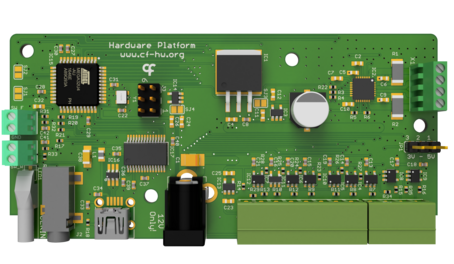

Namespace Harp.SyringePump
Harp Syringe Pump
This is a repository for the Harp Syringe Pump. The Harp Syringe Pump is a device that can be used to control the flow of liquid through a syringe by driving a stepper motor. 
Key Features
- Low and High-level interface control of the stepper motor
- General digital inputs configurable to trigger hardware events
- Digital outputs configurable to report hardware events
- Includes on-board stepper-motor driver
- Included mechanical designs and assembly instructions
Connectivity
- 1x clock sync input (CLKIN) [stereo jack]
- 1x USB (for computer) [USB type B]
- 1x 12V supply [barrel connector jack]
- General purpose I/O (5V) [screw terminal]
Interface
The interface with the Harp Behavior can be done through Bonsai or a dedicated GUI (Graphical User Interface).
Licensing
Each subdirectory will contain a license or, possibly, a set of licenses if it involves both hardware and software.
| SyringePump | |
|---|---|
| whoAmI | 1296 |
| firmwareVersion | 1.0 |
| hardwareTargets | 1.0 |
Registers
| name | address | type | length | access | description | range | interfaceType |
|---|---|---|---|---|---|---|---|
| EnableMotorDriver | 32 | U8 | Write | Enables the motor driver. | EnableFlag | ||
| EnableProtocol | 33 | U8 | Write | Enables the currently defined protocol. | EnableFlag | ||
| Step | 34 | U8 | Write, Event | Status of the STEP motor controller pin. | StepState | ||
| Direction | 35 | U8 | Write, Event | Status of the DIR motor controller pin. | DirectionState | ||
| ForwardSwitch | 36 | U8 | Event | Status of the forward limit switch. | ForwardSwitchState | ||
| ReverseSwitch | 37 | U8 | Event | Status of the reverse limit switch. | ReverseSwitchState | ||
| DigitalInputState | 38 | U8 | Event | Status of the digital input pin. | DigitalInputs | ||
| DigitalOutputSet | 39 | U8 | Write | Set the specified digital output lines. | DigitalOutputs | ||
| DigitalOutputClear | 40 | U8 | Write | Clear the specified digital output lines. | DigitalOutputs | ||
| DO0Sync | 41 | U8 | Write | Configures which signal is mimicked in the digital output 0. | DO0SyncConfig | ||
| DO1Sync | 42 | U8 | Write | Configures which signal is mimicked in the digital output 1. | DO1SyncConfig | ||
| DI0Trigger | 43 | U8 | Write | Configures the callback function triggered when digital input is triggered. | DI0TriggerConfig | ||
| StepMode | 44 | U8 | Write | Sets the motor step mode from a list of available types. | StepModeType | ||
| ProtocolStepCount | 45 | U16 | Write | Sets the number of steps to be executed in the current protocol. | [1:] | ||
| ProtocolPeriod | 47 | U16 | Write | Sets the period, in ms, of of each step in the protocol. | [1:] | ||
| EnableEvents | 52 | U8 | Write | Specifies all the active events in the device. | PumpEvents | ||
| Protocol | 54 | U8 | Event | Status of the protocol execution. | ProtocolState | ||
| ProtocolDirection | 55 | U8 | Write | Sets the direction of the protocol execution. | ProtocolDirectionState |
Classes
- AsyncDevice
Represents an asynchronous API to configure and interface with SyringePump devices.
- CreateDI0TriggerPayload
Represents an operator that creates a message payload that configures the callback function triggered when digital input is triggered.
- CreateDO0SyncPayload
Represents an operator that creates a message payload that configures which signal is mimicked in the digital output 0.
- CreateDO1SyncPayload
Represents an operator that creates a message payload that configures which signal is mimicked in the digital output 1.
- CreateDigitalInputStatePayload
Represents an operator that creates a message payload that status of the digital input pin.
- CreateDigitalOutputClearPayload
Represents an operator that creates a message payload that clear the specified digital output lines.
- CreateDigitalOutputSetPayload
Represents an operator that creates a message payload that set the specified digital output lines.
- CreateDirectionPayload
Represents an operator that creates a message payload that status of the DIR motor controller pin.
- CreateEnableEventsPayload
Represents an operator that creates a message payload that specifies all the active events in the device.
- CreateEnableMotorDriverPayload
Represents an operator that creates a message payload that enables the motor driver.
- CreateEnableProtocolPayload
Represents an operator that creates a message payload that enables the currently defined protocol.
- CreateForwardSwitchPayload
Represents an operator that creates a message payload that status of the forward limit switch.
- CreateMessage
Represents an operator which creates standard message payloads for the SyringePump device.
- CreateProtocolDirectionPayload
Represents an operator that creates a message payload that sets the direction of the protocol execution.
- CreateProtocolPayload
Represents an operator that creates a message payload that status of the protocol execution.
- CreateProtocolPeriodPayload
Represents an operator that creates a message payload that sets the period, in ms, of of each step in the protocol.
- CreateProtocolStepCountPayload
Represents an operator that creates a message payload that sets the number of steps to be executed in the current protocol.
- CreateReverseSwitchPayload
Represents an operator that creates a message payload that status of the reverse limit switch.
- CreateStepModePayload
Represents an operator that creates a message payload that sets the motor step mode from a list of available types.
- CreateStepPayload
Represents an operator that creates a message payload that status of the STEP motor controller pin.
- CreateTimestampedDI0TriggerPayload
Represents an operator that creates a timestamped message payload that configures the callback function triggered when digital input is triggered.
- CreateTimestampedDO0SyncPayload
Represents an operator that creates a timestamped message payload that configures which signal is mimicked in the digital output 0.
- CreateTimestampedDO1SyncPayload
Represents an operator that creates a timestamped message payload that configures which signal is mimicked in the digital output 1.
- CreateTimestampedDigitalInputStatePayload
Represents an operator that creates a timestamped message payload that status of the digital input pin.
- CreateTimestampedDigitalOutputClearPayload
Represents an operator that creates a timestamped message payload that clear the specified digital output lines.
- CreateTimestampedDigitalOutputSetPayload
Represents an operator that creates a timestamped message payload that set the specified digital output lines.
- CreateTimestampedDirectionPayload
Represents an operator that creates a timestamped message payload that status of the DIR motor controller pin.
- CreateTimestampedEnableEventsPayload
Represents an operator that creates a timestamped message payload that specifies all the active events in the device.
- CreateTimestampedEnableMotorDriverPayload
Represents an operator that creates a timestamped message payload that enables the motor driver.
- CreateTimestampedEnableProtocolPayload
Represents an operator that creates a timestamped message payload that enables the currently defined protocol.
- CreateTimestampedForwardSwitchPayload
Represents an operator that creates a timestamped message payload that status of the forward limit switch.
- CreateTimestampedProtocolDirectionPayload
Represents an operator that creates a timestamped message payload that sets the direction of the protocol execution.
- CreateTimestampedProtocolPayload
Represents an operator that creates a timestamped message payload that status of the protocol execution.
- CreateTimestampedProtocolPeriodPayload
Represents an operator that creates a timestamped message payload that sets the period, in ms, of of each step in the protocol.
- CreateTimestampedProtocolStepCountPayload
Represents an operator that creates a timestamped message payload that sets the number of steps to be executed in the current protocol.
- CreateTimestampedReverseSwitchPayload
Represents an operator that creates a timestamped message payload that status of the reverse limit switch.
- CreateTimestampedStepModePayload
Represents an operator that creates a timestamped message payload that sets the motor step mode from a list of available types.
- CreateTimestampedStepPayload
Represents an operator that creates a timestamped message payload that status of the STEP motor controller pin.
- DI0Trigger
Represents a register that configures the callback function triggered when digital input is triggered.
- DO0Sync
Represents a register that configures which signal is mimicked in the digital output 0.
- DO1Sync
Represents a register that configures which signal is mimicked in the digital output 1.
- Device
Represents an observable source of messages from the Harp device connected at the specified serial port.
- DigitalInputState
Represents a register that status of the digital input pin.
- DigitalOutputClear
Represents a register that clear the specified digital output lines.
- DigitalOutputSet
Represents a register that set the specified digital output lines.
- Direction
Represents a register that status of the DIR motor controller pin.
- EnableEvents
Represents a register that specifies all the active events in the device.
- EnableMotorDriver
Represents a register that enables the motor driver.
- EnableProtocol
Represents a register that enables the currently defined protocol.
- FilterRegister
Represents an operator that filters register-specific messages reported by the Harp.SyringePump device.
- Format
Represents an operator which formats a sequence of values as specific SyringePump register messages.
- ForwardSwitch
Represents a register that status of the forward limit switch.
- GroupByRegister
Represents an operator that groups the sequence of Harp.SyringePump" messages by register type.
- Parse
Represents an operator which filters and selects specific messages reported by the SyringePump device.
- Protocol
Represents a register that status of the protocol execution.
- ProtocolDirection
Represents a register that sets the direction of the protocol execution.
- ProtocolPeriod
Represents a register that sets the period, in ms, of of each step in the protocol.
- ProtocolStepCount
Represents a register that sets the number of steps to be executed in the current protocol.
- ReverseSwitch
Represents a register that status of the reverse limit switch.
- Step
Represents a register that status of the STEP motor controller pin.
- StepMode
Represents a register that sets the motor step mode from a list of available types.
- TimestampedDI0Trigger
Provides methods for manipulating timestamped messages from the DI0Trigger register.
- TimestampedDO0Sync
Provides methods for manipulating timestamped messages from the DO0Sync register.
- TimestampedDO1Sync
Provides methods for manipulating timestamped messages from the DO1Sync register.
- TimestampedDigitalInputState
Provides methods for manipulating timestamped messages from the DigitalInputState register.
- TimestampedDigitalOutputClear
Provides methods for manipulating timestamped messages from the DigitalOutputClear register.
- TimestampedDigitalOutputSet
Provides methods for manipulating timestamped messages from the DigitalOutputSet register.
- TimestampedDirection
Provides methods for manipulating timestamped messages from the Direction register.
- TimestampedEnableEvents
Provides methods for manipulating timestamped messages from the EnableEvents register.
- TimestampedEnableMotorDriver
Provides methods for manipulating timestamped messages from the EnableMotorDriver register.
- TimestampedEnableProtocol
Provides methods for manipulating timestamped messages from the EnableProtocol register.
- TimestampedForwardSwitch
Provides methods for manipulating timestamped messages from the ForwardSwitch register.
- TimestampedProtocol
Provides methods for manipulating timestamped messages from the Protocol register.
- TimestampedProtocolDirection
Provides methods for manipulating timestamped messages from the ProtocolDirection register.
- TimestampedProtocolPeriod
Provides methods for manipulating timestamped messages from the ProtocolPeriod register.
- TimestampedProtocolStepCount
Provides methods for manipulating timestamped messages from the ProtocolStepCount register.
- TimestampedReverseSwitch
Provides methods for manipulating timestamped messages from the ReverseSwitch register.
- TimestampedStep
Provides methods for manipulating timestamped messages from the Step register.
- TimestampedStepMode
Provides methods for manipulating timestamped messages from the StepMode register.
Enums
- DI0TriggerConfig
Configures the function executed when digital input is triggered.
- DO0SyncConfig
Configures which signal is mimicked in the digital output 0.
- DO1SyncConfig
Configures which signal is mimicked in the digital output 1.
- DigitalInputs
The state of the digital input pin.
- DigitalOutputs
The digital output lines.
- DirectionState
The state of the DIR motor controller pin.
- ForwardSwitchState
The state of the forward limit switch.
- ProtocolDirectionState
The state of the protocol execution.
- ProtocolState
The state of the protocol execution.
- PumpBoardType
Available board configurations.
- PumpEvents
The events that can be enabled/disabled.
- PumpProtocolType
Available protocol types.
- ReverseSwitchState
The state of the reverse limit switch.
- StepModeType
Available step modes.
- StepState
The state of the STEP motor controller pin.